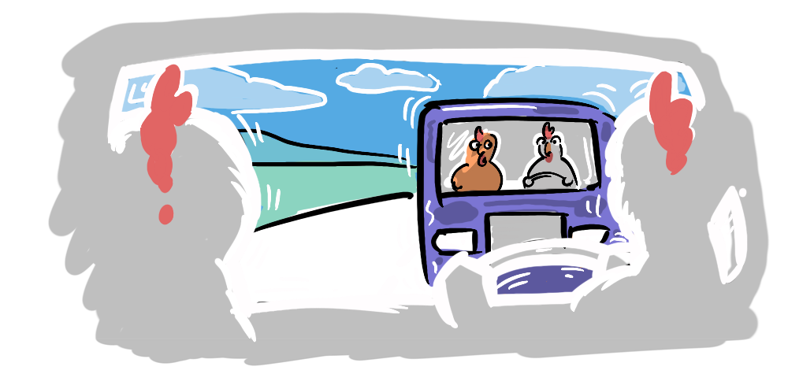
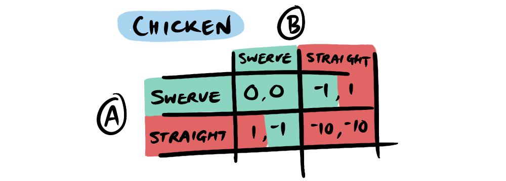
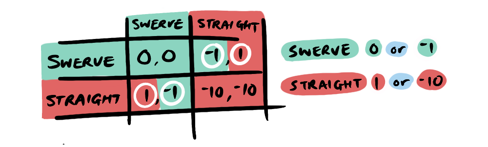
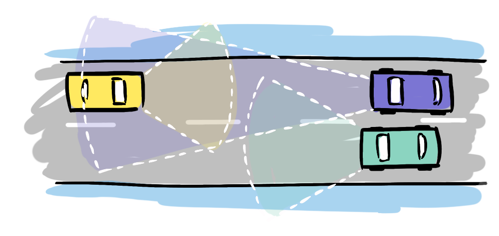
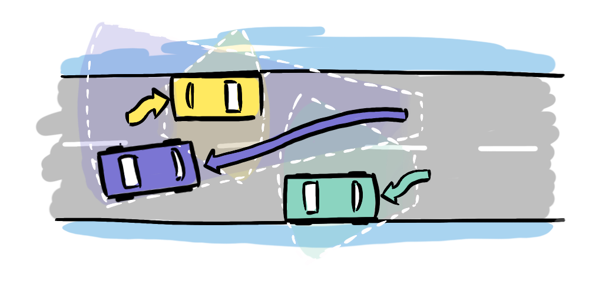
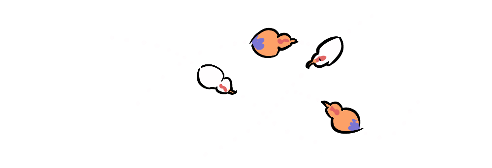

I'm at the front of a bus, carrying two youth rugby teams singing and dancing to SZA's 'The Weekend', blissfully unaware that we are on the wrong side of the road, hurtling towards an 18-wheeler, while going only marginally faster than our neighbour to the left whom we are nominally "over-taking". As we approach what seems like our inevitable demise, and without slowing, the oncoming truck and our unfazed neighbour shift slightly toward their respective sides of the road opening up a fissure around the centre line just wide enough for us to squeeze through and avoid a head-on collision. Our driver casually pulls ahead, back into our lane, and my heart is permitted to descend from my throat back into my chest cavity. The song and dance continue unabated.
This game of perpetual chicken would continue for the next hour as we drive through Arusha, Tanzania en route to the Tangangire National Park.
Chicken might seem an unlikely candidate for a perpetual (repeated) game, because it's inherently one-shot, like roulette, it's not advisable to continue playing past the first round, because death seems the inevitable outcome. But my experience in Tanzania (as part of my other life as a documentary filmmaker) revealed that, like many game theory games, the dynamics of chicken also change when iterated and when exposed to real world variables.
The classic game of chicken involves two cars driving towards one another, with the goal "don't be the first to swerve" but also, "don't die". On the face of it, this game seems almost too simple to qualify as a meaningful game-theoretical situation, but humour me. The payoff matrix is as follows:
The defining characteristic of chicken is that we have a small payoff for winning, with a catastrophic cost to both sides if they both follow through on what's needed to win (driving straight...). This results in two pure Nash Equilibria (straight, swerve) and (swerve, straight).
This means that if one can respond to the other, they have a clear choice, if the opponent swerves, go straight, if the opponent goes straight, swerve. So far this is almost a case of "duh, so what?". Well, not so fast.
Chicken is typically modeled as a simultaneous game. Unlike turn-based games, Chicken is played in real time—it's assumed that each player's decision is made in the last second. This simultaneity changes everything. Without a clear sequence of play, players cannot make decisions based on the other person's decision, meaning they can't safely decide which of the two Nash equilibria to choose—and the stakes of failure to make the complimentary choice are high.
So, why doesn't this play out in Arusha? Well, thankfully death is not the only determining factor in human behaviour. We have communication, laws, fear, intuitive physics, and real world asymmetries that introduce a greater range of options.
In Arusha, you are dealing with numerous vehicles, all with different speed capacities, from tractors, and sometimes even livestock, to heavy trucks, to old buses, to speedy government issue 4x4s (the true menace of the road). Passing is a constant necessity, on busy two-lane roads with no passing lanes.
This difference in speed is both the creation of and solution to the problem. Game theory deals with perfectly equal agents; equal speeds and equal capacity to swerve. Game Theory researchers at Maastricht University working with robots, explain the situation in terms of a Velocity Obstacle paradigm, which dictates that for a given velocity, there is a region where a collision becomes inevitable (a point of no return). Think of the velocity obstacle as a cone of doom extending from your position based on your current velocity. Between equal agents this becomes a Reciprocal Velocity Obstacle where...
"... each robot has to take care of half of the collision avoidance" — Evolutionary Advantage of Reciprocity in Collision Avoidance (Maastricht University)
However, what happens when agents have vastly varying speeds, like in Arusha? Well, then you have asymmetrical Velocity Obstacles, with faster agents reaching a point of no return before others, meaning that the slower of the two agents is left with the obvious choice between suicide and survival—to swerve. This essentially changes a simultaneous game into a sequential one,making the original (straight, swerve) Nash equilibrium achievable. Meanwhile the faster of the two vehicles still has a choice to make, whether to gun it or not, asking "can I get up to a speed significant enough to make it obvious to the other vehicles that I am past the point of no return before they are?". If so "GO!".
And indeed this is what I saw, time and time again in Arusha.
There are loads of other human behaviours where we naturally avoid head-on conflict, but one is particularly simple. In game development a standard approach to collision avoidance begins simply by slowing down, which creates a surprisingly natural behaviour between agents, because it's a behaviour animals naturally adopt.
As well as collision-avoidance, nature is full of conflict-avoidance strategies—from dominance rituals to geopolitical diplomacy. Violent conflicts between countries come with a huge cost to both parties, so (generally) diplomacy is a first port of call. After all, looking at the chicken payoff matrix (above), it's a very negative sum game, your expected payoff is negative (as opposed to a scenario like the Stag Hunt which is positive) so, perhaps avoiding it altogether is the best course. Recalling the line from War Games, about nuclear conflict...
"The only winning move is not to play"
But the drivers in Arusha are forced into this situation by a two lane road, and long drives with many slow vehicles—not overtaking could double or triple an already long journey. So, there is a shared understanding that close-call over-taking is a necessity. Drivers follow the general rule of slowing down, making the contrast between their speed and the committed over-taker clearer. This shared understanding also allows for drivers who aren't driving the fastest cars (like our bus driver) to clearly signal their intentions, allowing for reciprocal "swerving" in other drivers.

What seems like a recipe for disaster—a losing game, with death in one quadrant—finds itself as a largely functional system, with very few collisions because of a quirk of speed asymmetry, shared understanding and simply slowing down. It may also have something to do with the Tanzanian people and culture—a big reason why Tanzania is my favourite destination on earth, the birthplace of the phrase Hakuna Matata.
To an outsider like myself, familiar with roads where everyone is driving near identical speeds, with no shared understanding, and no expectation of slowing down, driving Arusha-style would be a deadly proposition, but as with many repeated games, perpetual chicken engages cooperative mechanisms and instincts that reflect game-theoretical logic that has served us throughout our evolutionary history.
This brings us to another major area of game theory: Evolutionary Game Theory which we will explore later using the Hawk-Dove game. The Hawk-Dove game maps to the Chicken payoff matrix, but unlike Chicken, which is a Social Dilemma, Hawk-Dove concerns a biological contest for resources, and we'll be learning about that as part of a future series on Evolutionary Game Theory.
But for now we'll be looking to another classic: The Battle of the Sexes.